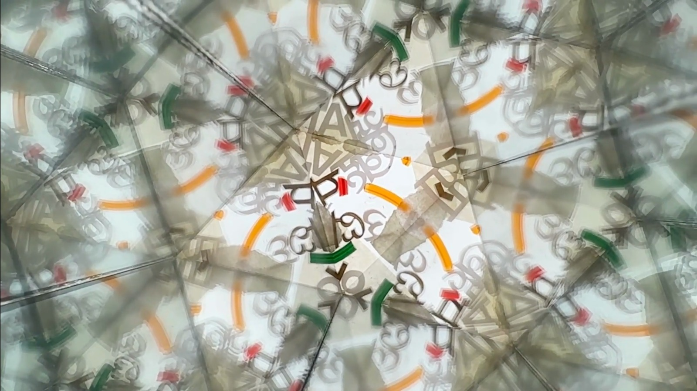
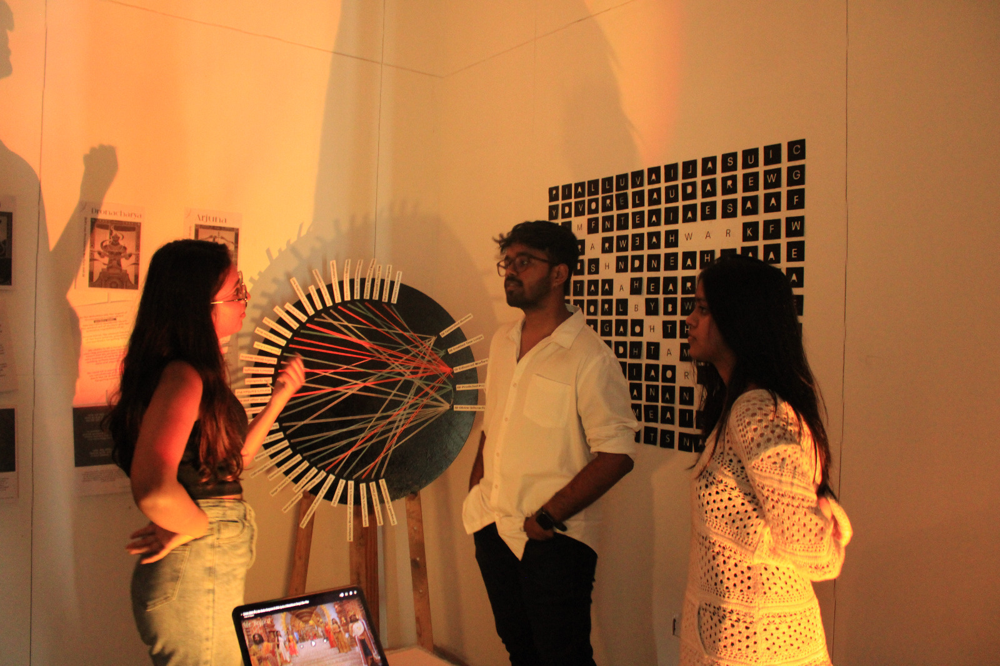
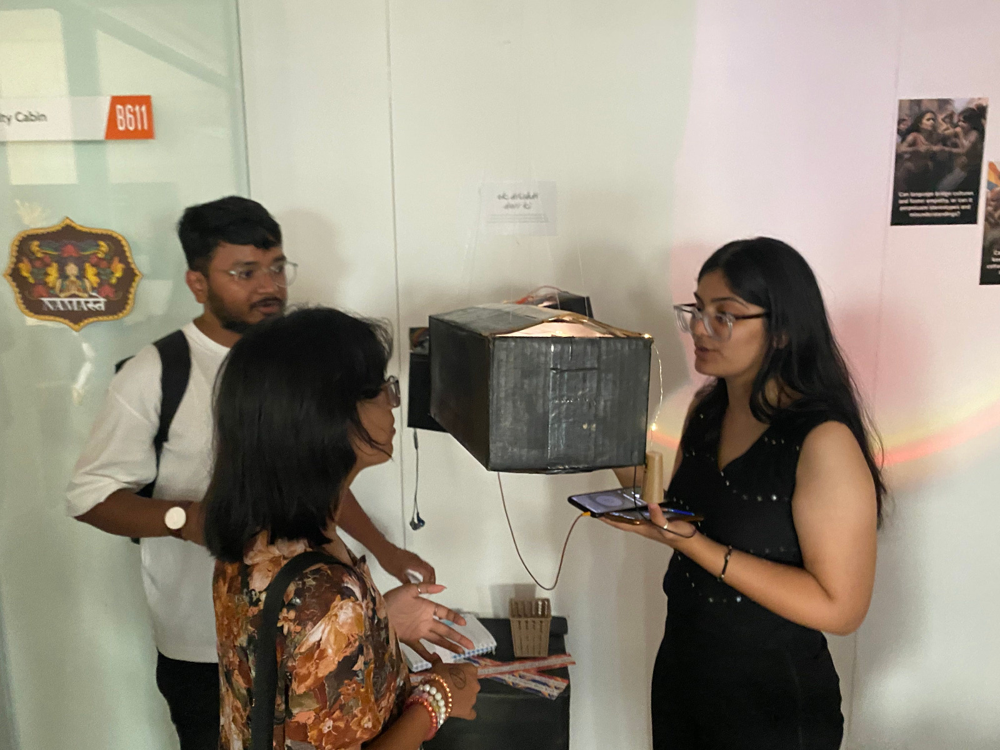
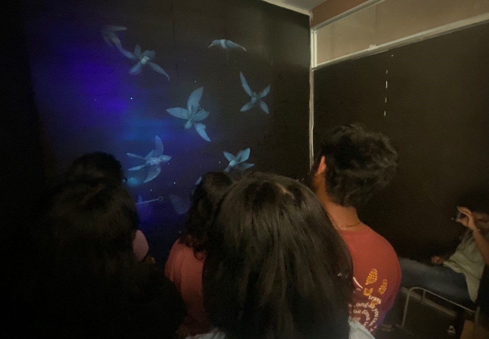

Exploring Boundaries: Alternatives and Futures for the Indian Sub-Continent

The Brief
Co-designed and facilitated with Pranshu Kumar Chaudhary, this workshop gave design students at Avantika University a deliberately difficult problem: envision alternatives and futures for the Indian Sub-Continent using discursive design as a methodology.
The point wasn't to produce polished solutions. It was to use design as a tool for making people think — about politics, infrastructure, identity, ecology — through objects and artefacts rather than arguments.
Facilitation Approach
Discursive design sits in uncomfortable territory for most design students trained to solve problems and ship outcomes. The workshop had to first create permission to be speculative, then give students rigorous tools to be speculative well.
The structure moved from critical reading and precedent analysis through to scenario building and artefact production. Each stage was designed to surface assumptions — about what design is for, what futures are possible, and whose futures count. Critique sessions were structured so students had to defend the social function of their work, not just its aesthetic or technical quality.
What the Students Made
The breadth of what students chose to explore — sustainable megacities, alternative education systems, agricultural futures, tribal perspective games, language preservation — was itself a finding. Given genuine latitude, design students reached immediately for questions of equity and identity, not just technology.
The strongest projects worked because they were uncomfortable. They didn't propose answers. They proposed the right questions, made tangible.



